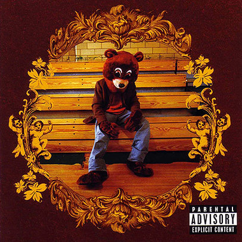
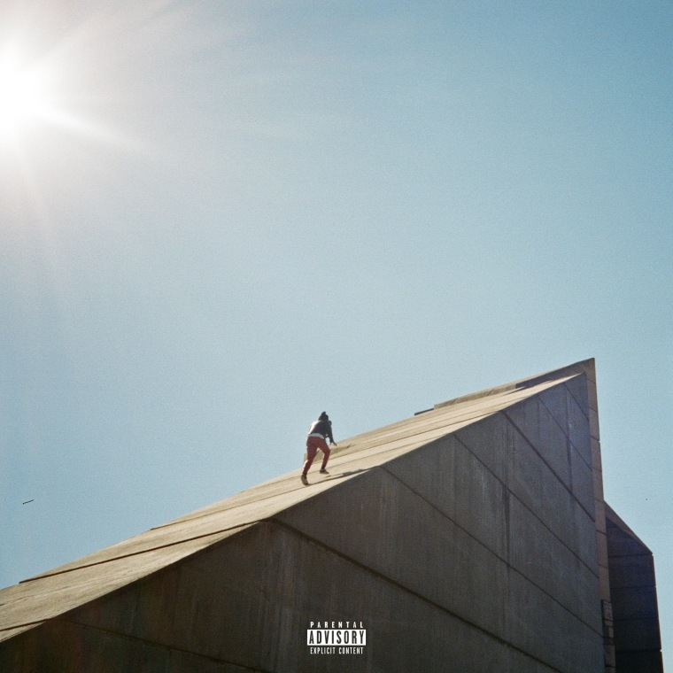
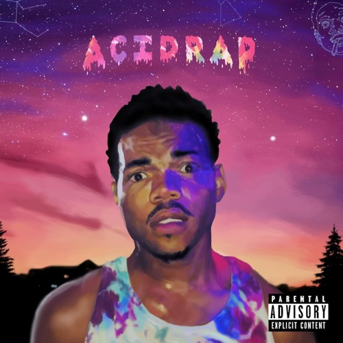

| Album Name | Artist | Year | Album Cover |
|---|---|---|---|
| 1. If You're Reading This It's Too Late | Drake | 2015 | |
| 2. College Dropout | Kanye West | 2004 |  |
| 3. Colouring Book | Chance The Rapper | 2016 | |
| 4. Beauty Behind The Madness | The Weeknd | 2016 | |
| 5. Because The Internet | Childish Gambino | 2013 | |
| 6. Freudian | Danial Caesar | 2017 |  |
| 7. Graduation | Kanye West | 2007 | |
| 8. Late Registration | Kanye West | 2005 | |
| 9. Acid Rap | Chance The Rapper | 2013 |  |
| 10. Thank Me Later | Drake | 2010 |